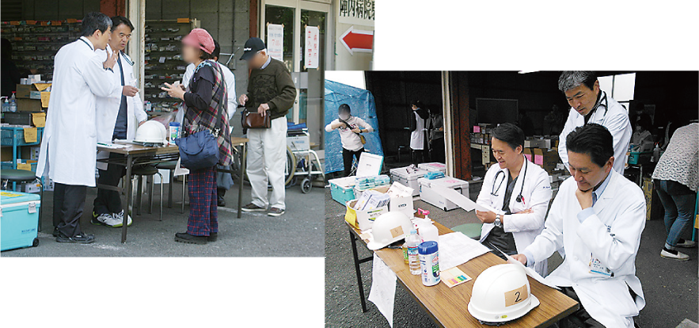
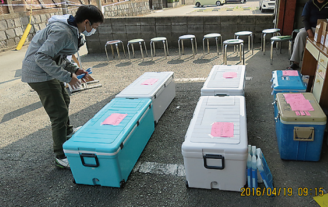

CDEが心得ておきたい災害時の危機管理【特別インタビュー】日頃からの多方面との良好なコミュニケーションが功を奏し旧式のガレージ診療で乗り切った陣内病院(熊本市)の震災対応

左から、川口はるみ総師長(CDE)、
陣内秀昭院長、吉田陽薬剤部主任(CDE)
地震には遭遇するわけないと信じきっていたほとんどの熊本県民
約40年前、糖尿病を総合的に診る治療センターとして開設され、今日までその実績を誇る陣内病院は、震源地の益城町に隣接した熊本市内に立地していたため、今回の熊本地震による直接的な被害を受けました。
陣内病院の陣内秀昭院長(以下、院長先生)は、地震前の備えについて次のように振り返ります。「災害などの危機管理に関しては、万が一の場合の患者さんの搬送先などの想定はしたことがありましたし、またある程度の備蓄品も準備していたつもりでした。しかし、震度7の揺れで、さまざまな物が散乱し足の踏み場もない状態に陥り、備蓄品に辿りつけないという状況を目の当たりにすると、ほとんど無防備状態に近かったと言わざるを得ません(写真1)。あらゆる被害状況を想定し備蓄の保管場所についても考慮せねばならないことを思い知らされました」。
川口はるみ総師長(CDE)も、「よもや熊本で地震に遭遇するなど想像だにしていませんでした。従来の危機管理の基本は、火災時の訓練を想定しているだけでした」と振り返ります。
そして、吉田陽薬剤部主任(CDE)も、「私自身が1型糖尿病なので、ニュージーランドや東北地震のニュースに接し、公的な建物が倒壊するような事態になった場合は、インスリン調達などはどのようなことになるのだろうと考えて調査まではおこなっていましたが、具体的な対策をたてるには至らぬまま被災してしまいました」と言います。
被災後、3日目にしてガレージ診療を開始 さまざまな工夫を重ねる
しかし、被災後の対応は迅速でした。2016年4月14日(木)の午後9時26分に発生した震度7の地震(後に前震)は、夜間だったにもかかわらず当直医師と病棟のスタッフが、入院患者さんが病院内に留まるのは危険と判断し、停電になった暗い中で病院外に一時退避させました。そして、翌朝までに、比較的病状の軽い方は避難所や自宅へと誘導し、その他の方は転医、転所などの緊急受け入れ対応を手配し、引継ぎを完了されたそうです。
院長先生は、建物の亀裂や壁の崩れ、医療機器が移動し、什器が倒れ中の書類等の散乱状態を目にして、「私自身がそこで陣頭指揮できる時間帯ではなかっただけに、何よりもその後の本震時(4月16日未明;震度7)にも二次災害や人的被害を出すことなく済んだ、スタッフたち自らの瞬時の判断を誇らしくさえ思いました」と当時の状況を語りました。
一夜明けた次の日からは、「何よりも1型糖尿病の患者さんには、インスリンを切らさないこと、2型糖尿病の患者さんには治療を中断しないことをモットーに、乗りきろう」と、スタッフが出勤するたびに、院長先生が必ず声掛けをされたそうです。
そして、病院の建物全体が被害を受けたため、急遽、病院の敷地に隣接していた古いガレージの1階で診療を始めることを決めました(写真2、3)。

写真2 病院に隣接したガレージを仮の診療所として開設

写真3 仮設の待合室

写真4
ガレージ入り口前を利用した
受付&診察室
当院は、まだ完全に電子カルテに移行していなかったことも逆に幸いし、患者さんが受診に来られると、病院内に残っていた紙カルテを、スタッフがヘルメットを被りながら取りに走り、ガレージの前に並べたテーブルで院長先生 はじめ3人の医師が対応するという方法を採ることにしま した(写真4)。
薬剤については、病院内の薬品庫から皆の力で運び出した薬剤棚に、通常診療時と同様に薬剤を配置することができたため、ストレスを感じることなく短時間でスムーズに調剤可能な体制が作られました。また、インスリンや GLP-1RA 等 の保管管理は、保冷剤を入れたクーラーボックスをいくつも用意することで万全な体制が整えられました(写真5、6)。

写真6 インスリン等の保管に役立ったクーラーボックス
「調剤業務は、平常時と違い薬剤師の出勤人員も限られていたので、ピンチヒッターとして看護師さんたちが、医師の指示を受けながら率先して調剤助手として関わってくれたため、院長先生がモットーとしていた途切れることのない薬剤提供に対応することができました」と、吉田薬剤部主任は語ります。
「業務を滞りなく進める上で大切な、電気、ガス、水道などのインフラは、電気が比較的早く回復したのは幸いでしたが、水道については病院に完備していたはずの貯水槽と配管設備の一部が破損し使えませんでしたし、ガスも復旧は遅れていました。仮診療所と定めたガレージは、30年ぶりに使用したというのに、シャッターも開け閉めできましたので、夜間の薬剤等の安全な保管が可能となり、旧式かつ手動の素晴らしさを実感しました」と、院長先生は驚いていました。
免震装置を備えた病院再建とさまざまな災害に備えるさらなる連携の必要性を認識し合う
想定外だった2度の大きな地震では、日頃から、各職種の専門性を遂行することのみに留まらず、業際的な部分にも目を向け対応していた経験の蓄積が、直後の瞬時の判断や対応として活かされたことと、日頃からの密度の濃いコミュニケーションがスタッフのみならず、患者さんやそのご家族、院外のさまざまな協力者たちとも良好に維持されていたことが円滑な連携となって活かされた、とも言えるでしょう。
はからずも震災直前にリニューアルしたホームページで、余震のさなかに情報発信を続けたことも、各方面の協力を仰ぐ上で重要なポイントになりました。また陣内病院が診療し続けていたという情報は患者さんの心の大きな支えになったようです。
今後は、災害対策マニュアルを単なる災害時に限定するのではなく、さらに広く病院としての事業継続計画の一環として見直していこうとの機運が高まっているといいます。
「この機会に、最新の免震装置を備えた病院に建て替えて、診療の拠点として安心、安全が確保でき、スタッフも大切にする病院を作っていきたいと考えています」と院長先生は、今回の震災を踏み台に新たな決意を語って下さいました。